Implementa estructuras de datos dinámicas lineales en la memoria de una computadora a partir del uso de arreglos, su representación y sus posibilidades, así como un lenguaje de programación.
- 3.1 Apuntadores
- 3.2 Pilas
- 3.2.1 Representación
- 3.2.2 Formas de uso
- 3.2.3 Implementación
- 3.2.4 Operaciones permitidas
- 3.3 Colas
- 3.3.1. Representación
- 3.3.2 Formas de uso
- 3.3.3 Implementación
- 3.3.4 Operaciones permitidas
- 3.4 Listas enlazadas
- 3.4.1. Representación
- 3.4.2 Formas de uso
- 3.4.3 Implementación
- 3.4.4 Operaciones permitidas
📍3.1 Apuntador
¿Para qué sirve un apuntador?
Un apuntador o puntero contiene la dirección de memoria de una variable que tiene un valor específico.
Los apuntadores son muy importantes porque permiten enlazarse con otros nodos.
La forma de declarar un apuntador es de la siguiente forma:
char *Letra
donde:
char es el tipo de dato
*Letra es una variable que se declara apuntador, es importante considerar que para declarar
el apuntador siempre debe de ir el * antes del nombre de la variable.
🥞3.2 Pilas
Imaginen que estamos comiendo con tortillas, de que parte toman la tortilla, la que esta hasta abajo, la que está en medio o la primera, pues de la primera, si intentas sacar a la fuerza una tortilla que esta hasta abajo ¿Qué va a pasar? Así es como funciona una pila, último en entrar primero en salir, es lo que se conoce como el principio LIFO (Last In, First Out), que en español significa: Último en Entrar, Primero en Salir. El último dato que guardas es obligatoriamente el primero que tienes que sacar.
¿Qué es una pila?
Las pilas es una estructura de datos dinámicas lineales, son una colección de elementos organizados de forma LIFO (Last In, First Out), que significa el último elemento en entrar es el primero en salir.
Relacionado con la vida real, existen varios ejemplos de pilas: de libros, como se muestra en la figura 1, de platos, de tortillas, etc.
Para comprender más el comportamiento de la estructura de datos dinámica Pila, realiza el siguiente ejercicio:
- Utilizando el funcionamiento de una pila ¿Cómo sería la entrada de los elementos de la figura 2?
- Utilizando el funcionamiento de una pila ¿Cómo sería la salida de los elementos de la figura 2?
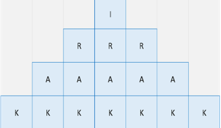
📊3.2.1 Representación
Para representar a una pila en memoria, se utilizarán arreglos unidimensionales (vector) donde se almacenarán los elementos, como se muestra a continuación:
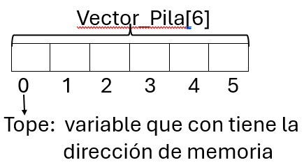
Operaciones (funciones) sobre las pilas:
- Push: Insertar un elemento al Vector_Pila[Tope]
- Pop: Elimina un elemento al Vector_Pila[Tope]
A continuación, se indica como es el funcionamiento de una pila:
- Los elementos se pueden insertar (añadir) o eliminar (suprimir) desde un extremo de la pila llamado "Tope".
- Tope es una variable que representa la posición de memoria del Vector_Pila [Tope] Si la pila está vacía eso quiere decir que el Vector_Pila [Tope] no tiene elementos, por lo que la variable Tope tendría asignado el valor de -1, o sea Tope = -1.
- Cada vez que se inserta un elemento al Vector_Pila [Tope] (Push), este se coloca en el en la posición de la variable Tope. Posteriormente Tope se incremente en uno.
- Cada vez que se elimina un elemento al Vector_Pila [Tope] (Pop), Tope se decrementa en uno.
📊3.2.2 Formas de uso
La estructura de datos dinámica Pila, se puede usar de diferentes formas, por ejemplo, utilizando un Vector_Pila[5] de tamaño 5 de tipo de dato char, donde se desean agregar las siguientes letras: A, B y C, en ese orden, se tendría que llamar la función Push tres veces, la letra ‘C’ estará en la cima de la pila, donde la variable Tope tendría asignado el valor de 3 y el Vector_Pila[Tope] tendría asignado ‘C’. Si se desea eliminar un elemento del Vector_Pila[Tope] , se manda a llamar la función pop y el primer elemento en eliminarse es ‘C’, porque fue el último en entrar. El resultado de esta acción es que Tope se retorna en 1, porque se decrementó. Siguiendo esta dinámica, se podrán insertar y eliminar los elementos del Vector_Pila[Tope], como se muestra en la siguiente figura 3, donde Tope = 0 y Vector_Pila[Tope] =Null.
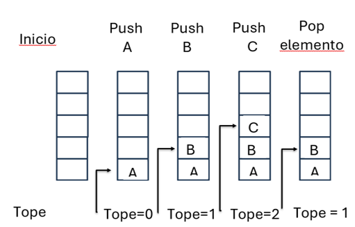
📊 3.2.3 Implementación
Existen tres formas de poner en práctica las pilas:
- 1) Llamado de funciones, subrutinas, procedimientos, programas, etc.
- 2) Expresiones aritméticas.
Iniciaremos con el punto 1 llamado de funciones, antes de continuar es importante comprender que es una función. Las funciones son un conjunto de procedimientos encapsulados en un bloque. El llamado de funciones nos permite desarrollar programas eficientes que permiten modularizar nuestro código. Primeramente, se tienen que declarar dentro de la función main (programa principal) pueden ser llamadas o desde otra función e incluso desde sí misma. Al momento de declarar la función, es necesario asignarle el tipo de dato, que es entero comúnmente, el nombre y los valores que espera recibir. Usualmente reciben parámetros, cuyos valores se utilizan para efectuar operaciones y adicionalmente retornan un valor. La figura 4 que se muestra a continuación nos da una idea general de como es el llamado de funciones a través de un menú principal.
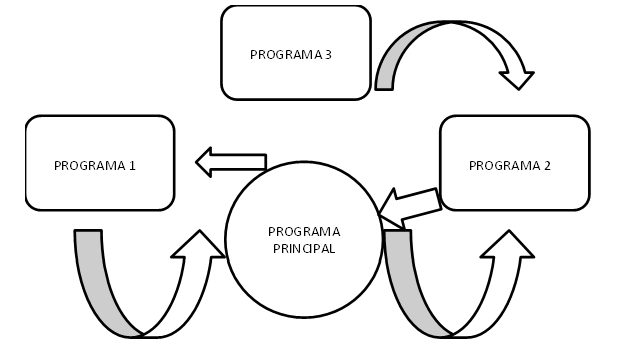
Algoritmo de Inserción (Función Push)
Este algoritmo describe el proceso para añadir un Dato a una estructura de tipo pila implementada
mediante un arreglo Vector_Pila[Tope]. Se asume que la variable Tope inicia con un valor de 0, lo que
indica que la pila está vacía, y que Max representa la capacidad máxima de almacenamiento del
Vector_Pila[Tope].
Push_Pila(Tope, Dato) // Inserta el elemento DATO a la pila SI Tope < Max ENTONCES // Verifica si existe espacio disponible Vector_Pila [Tope] = Dato // Almacena el dato en la posición // actual de Tope Tope = Tope + 1 // Incrementa a Tope a la siguiente posición SINO // No cumple la condición DESPLEGAR MENSAJE: "La Pila está llena" FIN SI
Algoritmo de Eliminación (Función Pop)
Este algoritmo detalla el procedimiento para retirar un elemento de la pila Vector_Pila[Tope]. Para que
la eliminación sea válida, es imperativo comprobar previamente que la estructura no se encuentre vacía
(es decir, que la posición de Tope no haya alcanzado a la posición de -1). Max representa la capacidad
máxima de almacenamiento del Vector_Pila.
Pop_Pila (Tope) // Elimina el elemento ubicado en // la posición de Tope SI Tope > 0 // Verifica que la pila contenga al // menos un elemento Tope = Tope - 1 // Decrementa Tope a la siguiente posición Vector_Pila [Tope] = NULO // Elimina/limpia el dato en la posición de Tope SINO // No cumple la condición DESPLEGAR MENSAJE: "La Cola está vacía" FIN SI
📝 Actividad UTIII_A1 programa pila:
Utilizar un lenguaje de programación para declarar el arreglo unidimensional Vector_Pila [6] definiéndolo con el tipo de dato char y en el que se puedan ingresar 6 letras.
La intención de esta actividad es que el estudiante comprenda las funciones que se realizan sobre las pilas, para este caso es el de mandar a llamar la función push, la función pop y así como recorrer y mostrar cada uno de los elementos del Vector_Pila [Tope] a través de la función mostrar.
- 1 . Declara el Vector_Pila[6] tipo char de tamaño 6, también declara una
variable de tipo int que se llame Tope, una variable de tipo char que se llama Dato, las funciones Push y Pop. - 2 . La forma de asignar las letras al Vector_Pila [Tope], será a través del
llamado de la función
Push, si se requiere
meter tres letras, se tendrá que llamar la función Push tres veces, a diferencia de cuando se asignaban valores a un
arreglo unidimensional era con la estructura de control for. - 3 . La forma de eliminar las letras al Vector_Pila [Tope], será a través del
llamado de la función
Pop, si se requiere
sacar dos letras, se tendrá que llamar la función Pop dos veces. - 4 . La forma de mostrar las letras del Vector_Pila [Tope], será a través del
llamado de la función
Mostrar. Para este
caso si será necesario utilizar la estructura de control for para recorrer todos los elementos del Vector_Pila [Tope].
- a) Programa fuente, el nombre de este programa debe de contener las iniciales de su nombre y el
nombre del
programa, por ejemplo, RBV_Programa_Pila. - b) Programa executable.
- c) Corrida del programa, en un archivo PDF.
Otra de las aplicaciones de las pilas son las expresiones aritméticas.
2. Las expresiones aritméticas son una combinación de variables y operadores que son de distintos niveles de precedencia. Los operadores que se utilizan en las expresiones aritméticas y que están en orden jerárquico (se considera ese orden para ejecutarse) son los siguientes
- () Paréntesis
- ^ Potencia
- * / Multiplicación, división
- + - Suma, resta
Las expresiones aritméticas están representadas de tres formas:
- a) Notación infija
- b) Notación prefija
- c) Notación postfija
a) Notación Infija:
A + B, A − 1, E / F, A * C, A ^ B, A + B + C, A + B − C.
b) Notación Prefija:
AB, - A1, / EF, * AC, ^ AB, + + AB C, - + AB C
c) Notación Postfija:
AB+, A1-, EF/, AC*, AB^, AB+C+, AB+C-
Para comprender como las expresiones aritméticas son una aplicación de las pilas, primeramente, se debe de convertir una expresión infija a posfija.
Pasos para convertir una expresión infija a postfija
- 1. Los operadores de prioridad más altas se convierten primero
- ()
- ^
- * /
- + -
- 2. Después que una parte de la expresión ha sido convertida, se trata como un solo operando.
- 3. Si son de igual prioridad, se procesan de izquierda a derecha, como son el caso de / * y + -.
El siguiente paso después de haber convertido la expresión infija a postfija, es
evaluar las expresiones postfijas.
Los pasos para evaluación de las expresiones postfija son los siguientes:
- 1. Explorar la expresión de izquierda a derecha.
- 2. Cada vez que se encuentra un operador, aplíquese a los operandos inmediatamente precedentes.
- 3. Continuar la exploración a la derecha.
1.- Convertir las siguientes expresiones infijas a postfijas
- (A – B) + C / D * E ^ F
- A * B - (C + D) / E * F
- A ^ B / C / D + (E – F)
- A / B + C - D * (E * F)
2.- Evaluar cada una de las expresiones infijas, sustituyendo los operandos (letras) por los siguientes valores:
A=1, B=2, C=3, D=4, E=5, F=6
Ejercicio programa expresión infija:
Comprender la aplicación de una pila en las expresiones infijas.
1. Convertir la siguiente expresión infija a postfija
A) A / B * C / D / E ^ F
2. Evaluar cada una de las expresiones infijas, sustituyendo los operandos (letras) por los siguientes valores:
A=1, B=2, C=3, D=4, E=5, F=6
3. Denotar paso a paso la separación de los operadores y operando, llenar el siguiente cuadro: (en la columna de pila van los operadores (signos))
Pasos para realizar el programa:
-
A) los siguientes vectores,
a Vector_Exp_Inf asignarle los valores de l a expresión infija
Vector_Exp_Inf[]={“A”, “ /”, “B”, “*”, “C”, “/”, “D”, “/”, ”E”,”^”, ”F”}
Vector_Pila[5]
Vector_Operando[6]
Vector_Exp_Inf[11] -
B) Separar los operandos de los operadores,
en el vector pila guardar los operadores (acomodar de acuerdo con el nivel jerárquico, comparando cada uno de los operadores y si es de mayor rango se van a intercambiar y así sucesivamente).
- C) Convertir la expresión infija a postfija tomando en cuenta los operadores de la pila, utilizando las llamadas de las funciones de push, pop y mostrar.
📋 3.2.4 Operaciones permitidas
Las operaciones fundamentales que rigen el comportamiento dinámico de una pila son dos funciones: Push(TOPE, DATO), para insertar elementos al Vector_Pila[TOPE] y la función Pop(TOPE) para eliminar un elemento al Vector_Pila[TOPE], respetando el principio LIFO, ultimo en entrar, primero en salir. Para gestionar estas operaciones, se utilizan los punteros o índices de control, para nuestro caso vamos a trabajar con los índices o posiciones de control, para el caso de la pila se utilizará la variable Tope.
• TOPE Tope es una variable que representa la posición de memoria del Vector_Pila [Tope].
Realiza el siguiente ejercicio:
⏳ Es el momento para evaluar la comprensión del tema estructura de datos pila, con la resolución del siguiente ejercicio.
Se tiene el siguiente
📋 Ejercicio: Explora el estado de la siguiente char Pila[5] = Vacía
1. Pila_Push=("A" )
2. Pila_Push("B")
3. Pila_Push(C)
4. Pila_Pop()
5. Pila_Push("D")
6. Pila_Pop()
7. Pila_Push(E)
Preguntas:
A) ¿Qué dato queda dentro de la pila al finalizar el número 7?
B) En la operación 3, ¿cuál es el subíndice de la pila Pila[ ] ?
C) En la operación 6, ¿cuál es el dato que contiene la pila?
Cierre: Consolidación y conclusión🔚
Momento para evaluar las respuestas.
En tu día día utilizando una herramienta de software, ¿cuándo utilizas una estructura de datos
Pila?
🌐 Al utilizar un navegador cada página que visitas se hace Push () a una pila. Al dar clic en el
botón de la flecha de regresar, se hace Pop ().
🤔 Cada alumno debe de analizar lo siguiente ¿qué pasa cuando una pila está llena y se intenta hacer un Push ()?
Se llega a la conclusión que la estructura de datos Pilas son muy útiles en programación cuando una función se llama a sí misma (recursión). Además de que se pueden realizar operaciones rápidas y controlar el orden inverso de las tareas.
🚶3.3 Colas
Figúrense que van al banco a pagar algunos servicios. Hay una fila de personas esperando frente a
los cajeros. Llega un cliente nuevo, ¿dónde se coloca? ¿A quién atiende el empleado?
Así es como funciona una cola, primero en entrar primero en salir, es lo que se conoce como el
principio FIFO (First In, First Out), que en español significa: Primero en Entrar, Primero en Salir.
El primer dato que almacenas es obligatoriamente el primero que tiene que salir.
¿Qué pasaría si el empleado atendiera con el principio LIFO de la Pila (Último en llegar, primero
en salir)?
Para poder implementar una cola primeramente se tiene que identificar qué es y cómo funciona.
¿Qué es una cola?
Las colas son estructuras de datos lineales caracterizadas porque la inserción de nuevos elementos se realiza por un extremo, mientras que la eliminación de los ya existentes se efectúa por el extremo opuesto. Los componentes de una cola se procesan estrictamente en el mismo orden en el que fueron insertados. En otras palabras, el primer elemento en ingresar a la estructura será el primero en ser retirado. Debido a este comportamiento, a las colas se les conoce comúnmente como estructuras FIFO (por sus siglas en inglés, First-In, First-Out: «primero en entrar, primero en salir»). Para que quede claro la definición de qué es una cola, un ejemplo son las filas que se hacen en un banco, ya sea para realizar cualquier operación en los cajeros o para ser atendidos por un ejecutivo, la forma como funciona la fila es que el primero en llegar va a hacer el primero en salir, se respeta el orden en que fueron llegando a la fila, así es lo mismo para una fila para comprar tortillas, para comprar boletos para cualquier evento, ya sea para entrar al cine, etc. La siguiente figura 5 representa como funciona una cola.
3.3.1 Representación
Este tipo de estructura, como es el caso de la pila, se puede implementar principalmente mediante el uso de: arreglos unidimensionales (vectores) y listas. Para propósitos didácticos, la representación de una cola será a través del uso de arreglos. Bajo este enfoque, es indispensable definir un tamaño máximo de almacenamiento y establecer dos variables de control:
- Frente: Variable encargada de almacenar la posición del primer elemento de la cola (el próximo a salir).
- Final: Variable que guarda la posición del último elemento que fue insertado en la estructura.
3.3.2 Formas de uso
La estructura de datos dinámica lineal Cola, como ya se menciona es muy común que se utilice para: representar los bancos, sistemas informáticos, en la gestión de las tareas que lleva a cabo un sistema operativo como en la impresión de documentos, entre otros. Las Colas pueden pasar por varios estados como se muestran en las siguientes figuras:
a) Cola con algunos elementos
Donde:
FRENTE tiene asignado 0, que indica que FRENTE está en la posición 0 del Vector_Cola[FRENTE] y es
donde se van a sacar los elementos y es el primer elemento que llego al vector.
FINAL tiene asignado 3, que indica que FINAL está en la posición 3 del Vector_Cola[FINAL] y es donde
se va a meter el siguiente elemento a dicho vector.
MAX es la variable que indica el tamaño del Vector_Cola que en este caso es de 7.
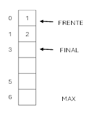
b) Cola vacía
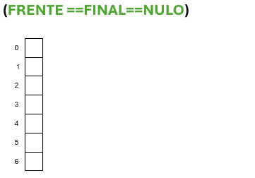
Cuando: FRENTE == FINAL AND COLA[FINAL]== NULLO
Esto indica que el Vector_Cola[FINAL] no tiene elemento.
Entonces la cola esta vacía
c) Cola llena
Donde:
FRENTE tiene asignado 0, que indica que FRENTE está en la posición 0 del Vector_Cola y es donde se
van a sacar los elementos y es el primer elemento que llego al Vector_Cola, en este caso no se ha
sacado ningún elemento
FINAL tiene asignado 7, que indica que FINAL está en la posición 7 del Vector_Cola y la condición es
que FRENTE es igual a MAX (que tiene asignado 7) se debe de mandar un mensaje que el Vector_Cola
está lleno.
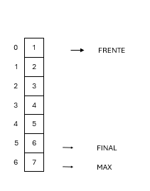
Algoritmo de Inserción (Push)
Este algoritmo describe el proceso para añadir un DATO al final de una estructura de tipo cola
implementada mediante un arreglo. Se asume que FRENTE y FINAL inician con un valor de 0, lo que indica
que la cola está vacía, y que MAX representa la capacidad máxima de almacenamiento del arreglo.
Push_Cola(FINAL, DATO) // Inserta el elemento DATO al final de la cola SI FINAL < MAX ENTONCES // Verifica si existe espacio disponible COLA[FINAL] = DATO // Almacena el dato en la posición actual de FINAL FINAL = FINAL + 1 // Incrementa el puntero FINAL a la siguiente posición SINO DESPLEGAR MENSAJE: "La cola está llena" FIN SI
Algoritmo de Eliminación (Pop)
Este algoritmo detalla el procedimiento para retirar el primer elemento de la cola. Para que la
eliminación sea válida, es imperativo comprobar previamente que la estructura no se encuentre vacía (es
decir, que la posición de FRENTE no haya alcanzado a la posición de FINAL).
Pop_Cola(FRENTE) // Elimina el elemento ubicado en el frente de la cola SI FRENTE < FINAL ENTONCES // Verifica que la cola contenga al menos un elemento COLA[FRENTE] = NULO // Elimina/limpia el dato en la posición del FRENTE FRENTE = FRENTE + 1 // Avanza el puntero FRENTE a la siguiente posición SINO DESPLEGAR MENSAJE: "La Cola está vacía" FIN SI
3.3.3 Implementación
Para ilustrar el comportamiento dinámico de una cola y el movimiento de sus posiciones, analizaremos una secuencia de operaciones utilizando los días de la semana como conjunto de datos.
- 1. Push (FINAL, DIA) Supongamos que se insertan en la cola los siguientes elementos en estricto orden: lunes, martes, miércoles, jueves y viernes. A continuación, se muestra la figura 6 de como quedaría la estructura de datos Cola después de haber insertado los días.
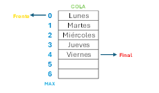
- 2. Eliminación Pop (FRENTE) Si se ejecuta una operación de eliminación, el elemento «lunes» será el primero en salir, ya que fue el primero en llegar, cumpliendo así con el principio FIFO primero en llegar, primero en salir. La siguiente figura 7 muestra que sucede cuando se elimina el lunes:
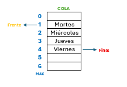
- 3. Nueva Inserción Push(FINAL, DIA) Si a continuación se inserta el elemento «sábado», este debe ingresar por el extremo posterior de la estructura. A continuación, se muestra la figura 8 de como quedaría la estructura de datos Cola después de haber insertado el sábado.
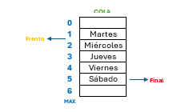
4. Análisis de Secuencia de Operaciones A partir del estado anterior (donde el Frente es «martes» y el Final es «sábado»), evaluemos qué ocurre al ejecutar la siguiente serie de instrucciones:
- a) Pop(FRENTE) cuatro veces (eliminación de martes, miércoles, jueves y viernes)
- b) Push(FINAL, DIA) domingo
- c) Pop(Frente) una vez (eliminación de sábado)
📝 Actividad UTIII_A2 programa de un Vector_Cola_Días:
Utilizar un lenguaje de programación para declarar una cola Vector_Cola [7] definiéndola con el tipo de dato string y en el que se puedan asignar 7 elementos que son los días de la semana.
La intención de esta actividad es que el estudiante comprenda las operaciones que se realizan sobre una cola, para este caso se van a mandar a llamar las funciones push para meter elementos a la cola, la función pop para sacar elementos a la cola y la función mostrar elementos de la cola.
- 1 . Declara una cola que se llame Cola_Vector [7] de tipo de dato string de
tamaño 7, las variables
FINAL y FRENTE de
tipo entero asignándoles 0, las funciones Push(FINAL, DIA) y Pop(FRENTE) de tipo entero, la función Mostrar y la
variable DIA de tipo string. - 2 . La forma de asignar los elementos a la Cola_Vector [FINAL], será llamando
la función Push(FINAL,
DIA) y para
sacar los elementos será llamando la función Pop(FRENTE). Para mostrar los elementos de Cola_Vector será
llamando la función Mostrar.
- a) fuente, el nombre de este programa
debe de contener las iniciales de su nombre y el
nombre del programa, por
ejemplo, RBV_Programa_Cola_Vector. - b) Programa executable.
- c) Corrida del programa, en un archivo PDF.
Ejercicio Programa Cola_Vector_Cliente_Banco:
Utilizar un lenguaje de programación para declarar una cola definiéndola con el tipo de dato string y en el que se puedan asignar 10 elementos que son los nombres de los clientes de un banco para simular los movimientos de espera.
La intención de esta actividad es que el estudiante comprenda las operaciones que se realizan sobre una cola, para este caso se van a mandar a llamar las funciones push para meter elementos a la cola, la función pop para sacar elementos a la cola y la función mostrar elementos de la cola.
- Declara una cola que se llame Cola_Vector_Cliente [10] de tipo de dato string de tamaño 10, las variables FINAL y FRENTE de tipo entero asignándoles 0, las funciones Push(FINAL, CLIENTE) y Pop(FRENTE) de tipo entero, la función Mostrar y la variable CLIENTE de tipo string.
- La forma de asignar los elementos a la Cola_Vector_Cliente[FINAL], será llamando la función Push(FINAL, CLIENTE) y para sacar los elementos será llamando la función Pop(FRENTE). Para mostrar los elementos de Cola_Vector será llamando la función Mostrar.
Realiza el siguiente ejercicio:
⏳ Es el momento para evaluar la comprensión del tema de la estructura de datos cola con la resolución del siguiente ejercicio.
📋 Ejercicio: Explora el estado de la siguiente char Cola[4] = Vacía
1. Cola_Push=("X" )
2. Cola_Push("Y")
3. Cola_Pop()
4. Cola_Push("Z")
5. Cola_Push("W")
6. Cola_Push()
Preguntas:
A) ¿Qué elementos quedan dentro de la cola al finalizar el número 6?
B) ¿Qué elemento se encuentra exactamente en el "Frente"?
C) ¿Qué elemento se encuentra exactamente en el "Final"?
¿En una computadora, en que momento se utiliza una Cola en lugar de una pila?
• 🖨️ Cola de impresión: los documentos se forman en una cola y el primero que llego es el primero
en imprimirse.
✏️Cada alumno debe escribir en un papel un ejemplo de la vida real (que no sea el banco ni el cine) donde se use la estructura FIFO de una cola.
Se llega a la conclusión que la estructura de datos Colas son seguras, porque la información que está en espera se almacena para que no se pierda. Además de que es rápida porque el tiempo de espera no cambia sin importar cuánta información haya en la cola. Garantiza que la información se procesa en el orden exacto en que llegaron.
🔗3.4 Listas enlazadas (simplemente ligadas)
En uno de los temas anteriores se pudo observar que la información de los arreglos se almacenaba de forma contigua, imagínense los vagones del metro juntos, uno al lado del otro. Pero ¿qué sucede si al querer almacenar información y la memoria está llena y solo hay espacios vacíos de memoria, pero separados? Ahora visualiza que estas en busca de un tesoro, están en la primera pista, ahí encuentran una caja, dentro de la caja hay información que dice: La siguiente pista esta en el parque Central debajo del reloj, ahí encuentran la segunda caja, la abren hay información que les dice a dónde ir después.
Así es como funciona una Lista Enlazada. Cada información está en un lugar del mapa (la memoria) totalmente dispersa, pero se sabe perfectamente quién sigue porque tiene una pista, que son los apuntadores o punteros que se identifican como variables que guardan una dirección de memoria.
Una lista simplemente ligada almacena una secuencia lineal de elementos que son conocidos como nodos. Para poder enlazar los nodos se requiere de un apuntador (que es una variable que contiene una dirección de memoria). Un nodo consta de los siguientes elementos: a) Un campo que contiene la información que es el tipo de datos que se desea guardar en la lista. b) Un apuntador que contiene la dirección de memoria que se enlaza con el siguiente nodo de la lista. Para identificar que es el fin de la lista, el último nodo apuntará a hacia NULL (vacío). La siguiente figura 9 ilustra como se enlazan los nodos de la lista utilizando un apuntador:
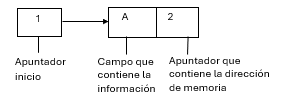
📋 3.4.1 Representación
Los elementos de la lista enlazada se almacenan en lugares no contiguo de la memoria, ¿esto que quiere decir?, que los elementos no son almacenados de manera secuencial (que están dispersos), en el caso de los arreglos unidimensionales si es de forma secuencial, la siguiente figura 10 muestra como es un almacenamiento de un arreglo unidimensional a una lista enlazada:
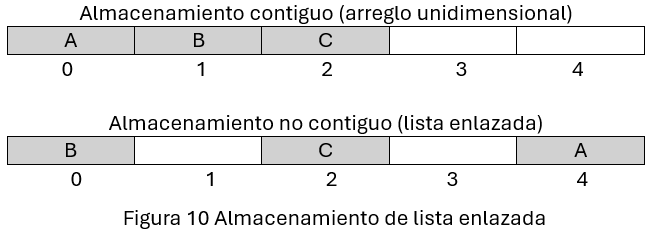
Las diferencias que existen entre los arreglos unidimensionales y las listas en lazadas son:
-
a) acceso de forma aleatoria a un arreglo unidimensional es más eficiente que en una
lista enlazada, esto es por la forma en que cada estructura almacena los elementos.
-
b) Para la búsqueda de un elemento de la lista enlazada, se deben de recorrer todos los
elementos desde el inicio hasta que se encuentre el elemento que se busca.
-
c) Para almacenar los elementos a una lista enlazada se requiere de memoria extra. En
cambio, para los arreglos unidimensionales no se requiere memoria adicional.
-
d) En las listas enlazadas se pueden eliminar o insertar elementos reacomodando los
enlaces.
3.4.2 Formas de uso
La estructura de datos dinámica lineal lista enlazada, se usa de diferentes formas, en el contenido anterior se trató de una lista sencillamente enlazada (que contiene un solo apuntador) nada más se puede ir de inicio a fin, pero no de fin a inicio, pero también existe la lista doblemente enlazada que, a diferencia de la lista sencillamente enlazada, tiene dos apuntadores *izquierda y *derecha que les permiten ir de inicio a fin o de fin a inicio, en donde el *izquierda contiene la dirección del predecesor y *derecha contiene la dirección del sucesor. En la siguiente figura 11 se demuestra como está constituido el nodo de una lista doblemente enlazada.
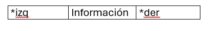
Realiza el siguiente ejercicio:
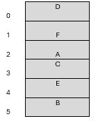
De la lista anterior, donde las letras son la información del nodo y los números son las direcciones de memoria, represéntala como una lista doblemente ligada y que este en orden alfabético de forma ascendente, como se muestra a continuación.
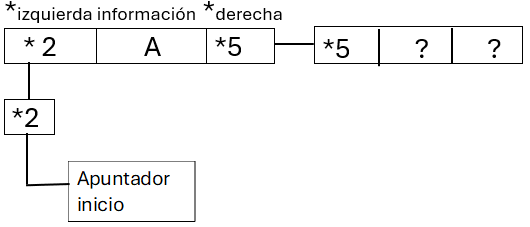
📋 3.4.3 Implementación
Como se mencionó anteriormente que las listas doblemente enlazadas se pueden recorrer de inicio a fin y de fin a inicio, un claro ejemplo de este tipo de estructura es la aplicación del Spotify con las listas de reproducción donde se puede saltar a la canción anterior o siguiente rápidamente. Otro ejemplo es el de una agenda telefónica.
El tipo struct, permite establecer un elemento de la lista, dicho elemento tendrá un campo dato y una variable apuntador.
typedef struct ListaIdentificar {
Elemento *inicio;
Elemento *final;
int tamaño;
}Lista;
El puntero inicio tendrá la dirección del primer elemento de la lista y el puntero final contiene la dirección del último elemento de la lista. La variable tamaño contiene el número de elementos de la lista.
📋 3.4.4 Operaciones permitidas
Las operaciones fundamentales que rigen el comportamiento dinámico de una lista enlazada son:
- Void Insertar_Elemento_Lista ( ); Esta función permite meter un elemento de tipo char a la lista.
- Void Eliminar_Elemento_Lista ( ); Esta función permite sacar un elemento a la lista.
- Void Mostrar_Elemento_Lista ( );
📝 Actividad UTIII_A3 programa de Lista_Enlazada:
1 . Un lenguaje de programación para declarar una lista
enlazada
donde es necesario definir el Nombre_Contacto con el tipo de dato string de tamaño 25, también
declarar Numero_Telefonico de tipo de dato char de tamaño 10. Esta agenda va a contener los nombres
de los
contactos con sus números de teléfono.
2 .-La intención de esta actividad es que el estudiante
comprenda las
operaciones que se realizan sobre una lista
enlazada, para este caso se van a mandar a llamar las
funciones: Void Insertar_Elemento_Lista (), Void
Eliminar_Elemento_Lista ( ) y Void
Mostrar_Elemento_Lista ( ).
- 1 . Define una lista enlazada que se llame Agenda_Telefonica que contenga
Nombre_Contacto de tipo de
dato string
de tamaño 25, el Numero_Telefono de tipo de dato char y tamaño 10, como se muestra a continuación:
struct _Agenda_Telefonica {
String Nombre_Contacto[25];
char Numero_Telefono[10];
struct _Agenda_Telefonica *siguiente;
};
struct _Agenda_Telefonica *primero, *ultimo
-
Void Insertar_Elemento_Lista ( )
Void Eliminar_Elemento_Lista ( )
Void Mostrar_Elemento_Lista ( )
2 . El programa debe de contener un menú para llamar las funciones
- a) Programa fuente, el nombre de este programa debe de contener las iniciales de su nombre y el
nombre del
programa, por ejemplo, RBV_Programa_Lista_Enlazada. - b) Programa executable.
- c) Corrida del programa, en un archivo PDF.